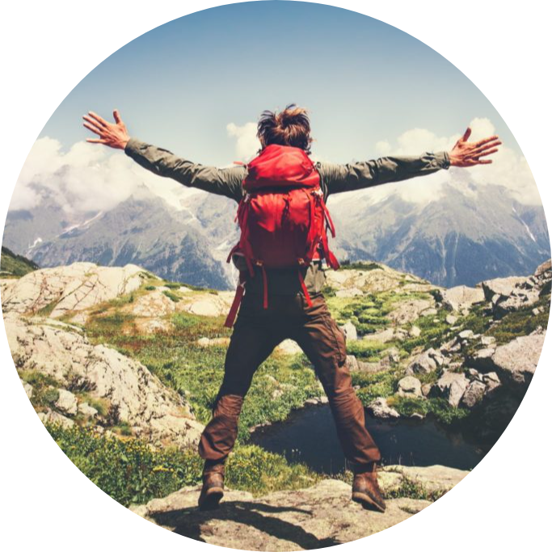
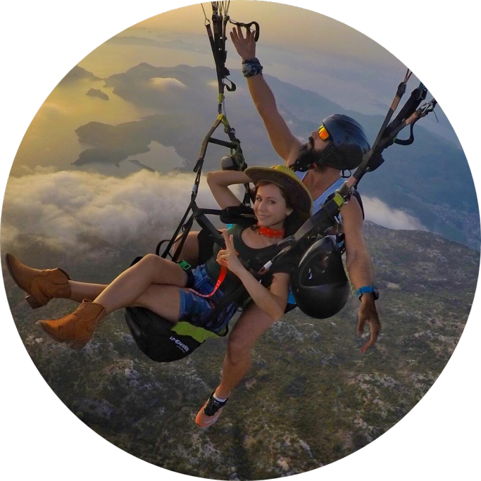
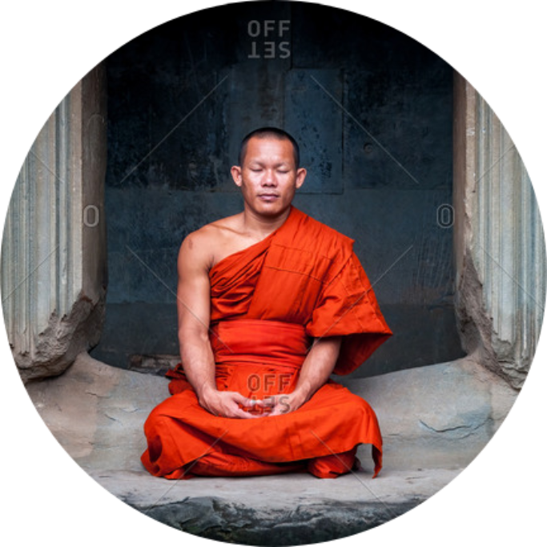
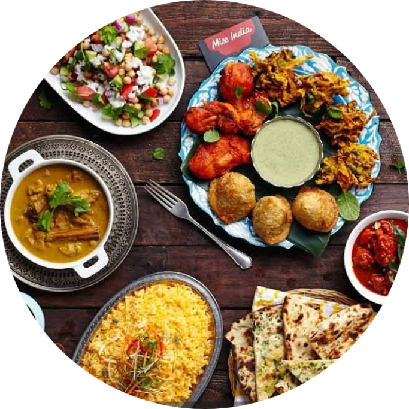

Tourism
Although many of us have been “tourists” at some
point in our lives, defining what tourism actually is can be difficult. Tourism is
the activities of people traveling to and staying in places outside their
usual environment for leisure,
business or other purposes
Which Tourist Personality Type Do You Think You Are?
The types of tourists are many and varied. Spend a day at an airport or a train station and you’ll be able to identify a few of these types of tourists.
Quickly, you will realize that their choice of tourism is as unique as they are. What types of tourists would you think you’d connect with?
Finding out what kind of tourist or traveler you really are is the gateway to identifying just what types of tourism you could enjoy or those that may have a practical aspect to your needs and life.
To help you, here’s a list of the main types of travel personalities that are out there. Of course, you may find that you could be many, perhaps all of them and the crossovers would be easier for you.
Adventurer

Adventure tourism is defined as the movement of the people from one to another place outside their comfort zone for exploration or travel to remote areas, exotic and possibly hostile areas. Adventure tourism is a type of tourism in which tourist do some adventures activities like as skydiving, hill climbing, scuba diving.
Adventure tourism is very popular among young age tourists. Adventure tourism gains much of its excitement by allowing the tourists to step outside their comfort zone. This may be from experiencing cultural shock or through the performance of acts, that required some degree of risk (real or perceived) and physical danger.
Thrill seeker

"A high level of stress can drive to a high level of satisfaction and thus, a higher sense of well-being. Stress is not just a negative force: in some instance, it can stimulate the brain and increase cognitive abilities."
Passionate and risk-taking, adventure tourists tend to be wealthy, willing to pay a premium for exciting and authentic experiences. Adventure operators have reported an average of USD 3,000 spent per person, with an average trip length of eight days.
Relaxed And Slower Paced

The first thing that may spring to mind is a luxury spa facility with head, body and foot massages, meditation, yoga, healthy food and crisp mountain air to breath. Why not? For the hardworking executive or stay at
home mum or dad, this is really a great self-reward.
Getting to do a lot of nothing other than being pampered
or pursuing inner peace is awesome.
But it could also extend beyond the obvious. Some people opt to just do the thing that they love.
Food And Drink

Foodie travel is a big thing these days. If you like the food and drink aspect of travel, you’ll certainly love doing a foodie package or creating one for yourself.
This can involve just simply going to local restaurants and tasting the dishes of the region whilst drinking the local wine. It can be more than just a restaurant visit.
Trying out the street food is a big attraction to the real food tourist.You can go on cookery lessons, learning how to prepare that ultimate regions dish, go to the factories and the bakeries where all the delicious fare is prepared.There are endless joys to be had for the gastronomic enthusiast.